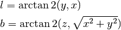

vector_to_lonlat¶
-
spherical_geometry.vector.vector_to_lonlat(x, y, z, degrees=True)[source]¶ Converts a vector to longitude and latitude.
Parameters: x, y, z : scalars or 1-D arrays
The input vectors
degrees : bool, optional
If
True(default) the result is returned in decimal degrees, otherwise radians.Returns: lon, lat : tuple of scalars or arrays of the same length
Notes
Where longitude is l and latitude is b:
